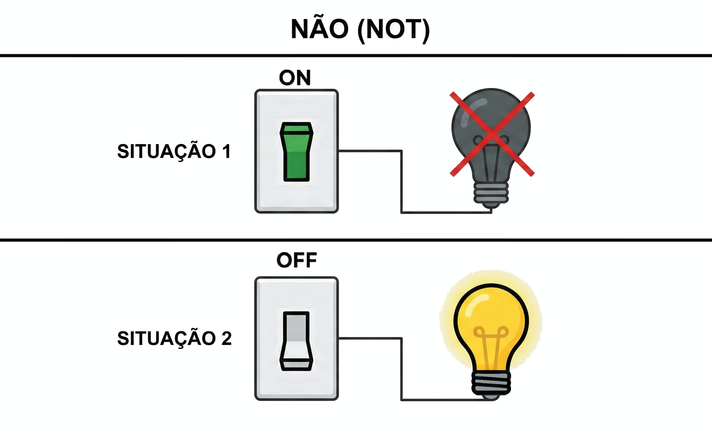
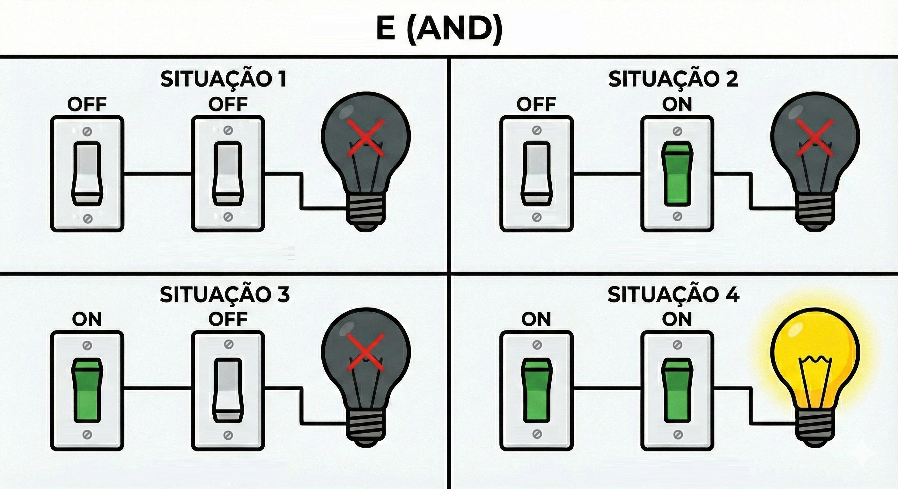
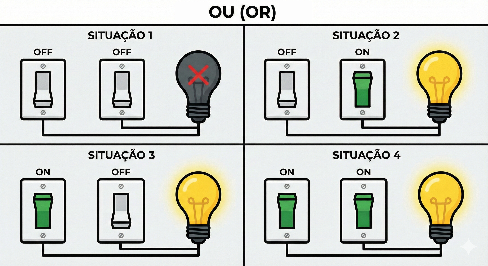
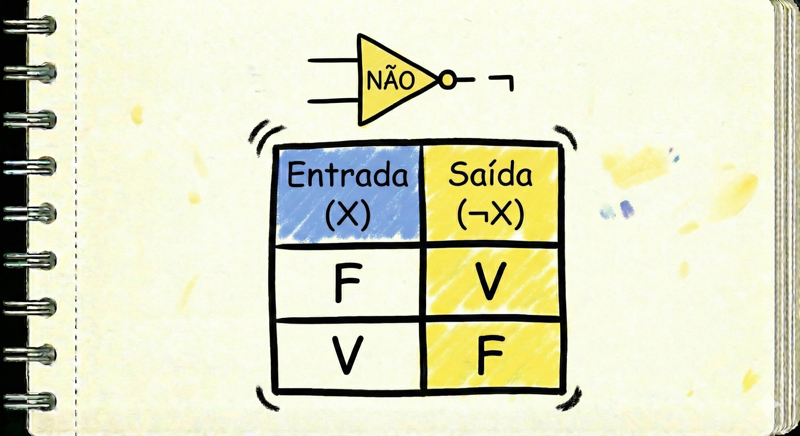
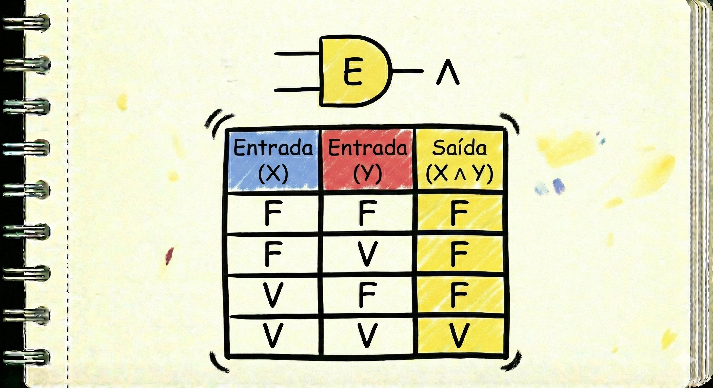
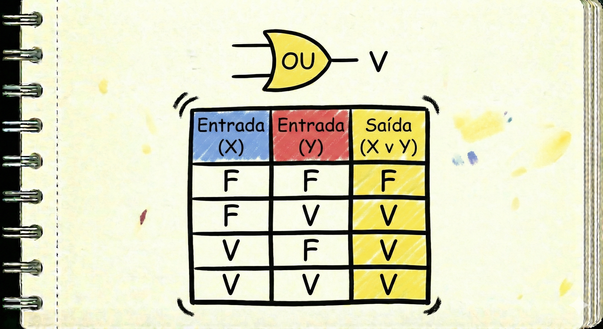
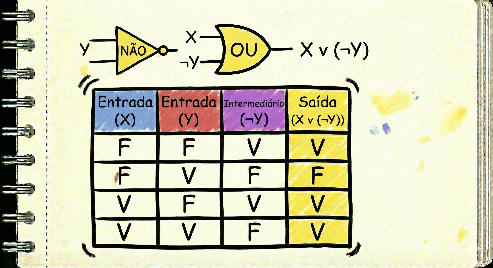

O que é Lógica Booleana?
Você já usa isso todos os dias. Sério!
Pode parecer um nome complicado, mas a Lógica Booleana é simplesmente a 'lógica do 'SIM' ou 'NÃO'.
Ela é a base de toda a computação moderna! Cada decisão que seu celular, seu computador ou seu videogame toma é baseada nela. E o mais legal? Você já a usa o tempo todo sem perceber:
Nas suas buscas: Quando você digita no Google "melhor celular E barato", você está usando lógica! Você está dizendo ao Google que SÓ quer resultados que tenham as DUAS coisas.
Nos seus jogos: Seu personagem só consegue usar um "poder especial" SE você aperta o botão 'X' E a sua barra de poder está cheia.
Nas suas decisões: "Eu vou ao parque SE fizer sol OU SE meus amigos me chamarem."
Essa lógica foi criada por um matemático chamado George Boole , e ela funciona com apenas dois valores: "VERDADEIRO (V) ou FALSO (F)".
O Bloco Básico: Proposições
Na Lógica Booleana, não trabalhamos com opiniões ('esse filme é bom'), mas sim com Proposições.
Uma proposição é qualquer frase que possamos afirmar, sem dúvida, se ela é Verdadeira ou Falsa.
Exemplo 1: "O sol é uma estrela." É uma proposição Verdadeira.
Exemplo 2: "Porcos podem voar." É uma proposição Falsa.
NÃO é uma proposição: "Que horas são?" Isso é uma pergunta, não podemos dizer se é V ou F.
NÃO é uma proposição: "Corra!" Isso é uma ordem.
Os 3 Operadores Lógicos Básicos
Para combinar essas proposições (V ou F), usamos três ferramentas principais, chamadas 'operadores'. Pense neles como os blocos de Lego da lógica.
Operador NÃO (NOT): O Inversor
O operador NÃO é o mais simples: ele apenas inverte o valor de uma proposição. O que é Verdadeiro vira Falso, e o que é Falso vira Verdadeiro.
Analogia: Pense em um interruptor de luz. Se a luz está Acesa (V), o NÃO a torna Apagada (F). Se está Apagada (F), o NÃO a torna Acesa (V).

Símbolos Comuns: ! (em programação), ¬ (em matemática).
Exemplo:
Se a proposição X = "Está chovendo" (V).
Então, NÃO X = "Não está chovendo" (F).
Operador E (AND): O Exigente
O operador E só retorna Verdadeiro se AMBASas proposições forem Verdadeiras.Se uma delas (ou as duas) for Falsa, o resultado todo é Falso.
Analogia: Pense em um circuito elétrico em série (um interruptor depois do outro). A lâmpada só acende se o interruptor 1 E o interruptor 2 estiverem ligados (V). Se um deles estiver desligado (F), a lâmpada não acende.

Símbolos Comuns: && (em programação), ^ (em matemática).
Exemplo:
"Para passar de ano na escola, você precisa de: Nota boa (V) E Frequência alta (V)"
Se você tiver só a Nota boa (V) mas sua Frequência for baixa (F), o resultado é Falso (você não passa de ano)."
Operador OU (OR): O Flexível
O operador OU é mais tranquilo. Ele retorna Verdadeiro se PELO MENOS UMAdas condições for Verdadeira. Ele só será Falso se AMBAS condições forem Falsas.
Analogia: Pense em um circuito elétrico em paralelo (um interruptor ao lado do outro). A lâmpada acende se o interruptor 1 OU o interruptor 2 estiver ligado (V). Ela só fica apagada se os dois estiverem desligados (F).

Símbolos Comuns: || (em programação), v (em matemática).
Exemplo:
"Você ganha sobremesa (V) se: comer todo o brócolis (F) OU arrumar seu quarto (V)."
Você ganha a sobremesa (V), pois pelo menos uma das condições foi Verdadeira.
Tabelas-Verdade (O "Mapa" da Lógica)
Uma Tabela-Verdade é simplesmente um 'manual' que mostra TODOS os resultados possíveis para um operador. É a nossa 'cola' oficial para saber a resposta certa!
Aviso Importante: Em computação, é muito comum usar 1 no lugar de V (Verdadeiro) e 0 no lugar de F (Falso). Lembre-se: eles significam exatamente a mesma coisa!
Tabela-Verdade do NÃO (NOT)
Como o NÃO só inverte, a tabela é bem simples:

Tabela-Verdade do E (AND)
Note que ela só é Verdadeira na primeira linha, quando X e Y são Verdadeiro:

Tabela-Verdade do OU (OR)
Note que ela só é Falsa na última linha, quando X e Y são Falsos:

Expressões Lógicas (Combinando Tudo)
O verdadeiro poder da lógica aparece quando misturamos os operadores para criar 'Expressões Lógicas' e analisar situações mais complexas.
Exemplo de Expressão:(Está chovendo E tenho guarda-chuva) OU (Está sol).
Qual a Ordem Certa? (Precedência)
Assim como na matemática (a multiplicação * vem antes da soma +), na lógica também temos uma ordem. Se não houver parênteses () para mandar, a ordem é:
NÃO (NOT) - Feito por primeiro.
E (AND) - Feito por segundo.
OU (OR) - Feito por último
Exemplo de Tabela-Verdade Mista
Vamos construir a tabela para a expressão X OU (NÃO Y). Primeiro, criamos as colunas X e Y. Depois, criamos a coluna para (NÃO Y), que é o inverso de Y. Por último, fazemos o OU entre a coluna X e a coluna (NÃO Y).

Pronto para o Desafio?
Agora que você entendeu os fundamentos da Lógica Booleana, que tal testar seu conhecimento na aba "Prática"? Preparamos alguns desafios e questões reais de concurso para você ver como isso funciona na prática e testar suas novas habilidades!